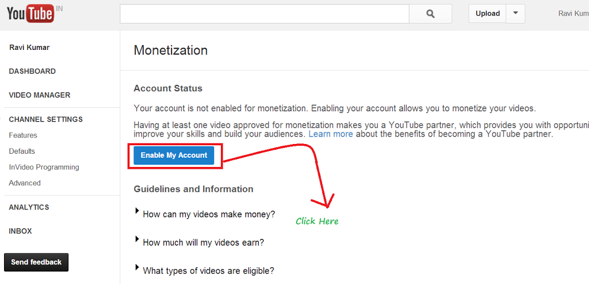

Way No 1 - Start A YouTube Channel
You’ve probably heard stories about regular people earning money on YouTube and thought, “Hey, I can do this too!”. While earning thousands of dollars probably isn’t realistic, you can start earning money quickly, especially if you have a strong subscriber base. Follow this guide to get your videos monetized and start earning revenue off of those YouTube ads.
1. Set up and build your YouTube channel
Your channel is your personal presence on YouTube. Each YouTube account has one channel attached to it. A YouTube account is the same as a Google account, and creating a YouTube account will grant you access to other Google products, such as Gmail and Drive..
- Create your account or use your existing one. Add keywords to help people find your channel. You can add keywords by navigating to the Advanced section of your Channel Settings. Make sure that your keywords are relevant to your content.
- Your user name can also work for or against you. If it’s short, easy to remember, and original, people will be more apt to remember you. However if you are using an existing account, you can always change your username by editing it on your Google+ account.
2. Add content
Try to upload content that is high quality, and isn't super long. (This option can vary depending on what type of content you decide to upload) Also try to upload regularly and stay consistent with your uploads.
- Even if your content isn't great at first, keep at it. Practice makes perfect. Try to make each video better than the last. You will often learn as you go.
- Improve your content by either using a better camera or trying better editing software or techniques. Also try to improve the way things are filmed. Use a tripod, have a friend help you or light your scenes better. It all helps for a better end product which in turn helps you get a better audience.
- By uploading regularly you can help hold an audience. People are more likely to subscribe if you add content on regular schedule, and maintain that schedule as much as possible.
- Make sure to tag your videos with key words that describe the content, as well as an eye-catching description. These will help drive people to your video from YouTube searches.
3. Gain an audience
Building an audience is key to increasing your monetization. You need people to watch your ads in order to make any money off of them. There is no one secret to getting more subscribers, just make the best content that you can and they will come to you.
- Keep uploading content and try to get people hooked. Send your video out on Twitter and Facebook. Share it with people. Distribute it elsewhere on the internet. Subscribers are essential to becoming a partner.
- Interact with your viewers by responding to comments and making occasional videos directly related to viewer comments and questions. Connecting with your community will bring more members into that community.
4. Monetize your videos
In order to start earning money on your videos, you’ll need to enable monetization. This means you are allowing YouTube to place ads in your video. This also means that you acknowledge that there is no copyrighted material in your video..
- Go to www.youtube.com and click "My Channel" on the webpage.
- Click the link called "Video Manager" on the top bar..
- Click channel and Enable on monetization

5. Get at least ten thousand total views to start earning money.
- You can monetize a video as it uploads by clicking the Monetization tab and checking the “Monetize with Ads” box.
- To monetize a video after it has been uploaded, open your Video Manager and click the “$” sign next to the video that you want to monetize. Check the “Monetize with Ads” box.
6. Set up Google AdSense
You can set up Google AdSense for free at the AdSense website. Click the Sign Up Now button to begin creating your account. You must be 18 years or older to create your own account. If you are younger than that, you will need an adult to help you.
- You can monetize a video as it uploads by clicking the Monetization tab and checking the “Monetize with Ads” box.
- To monetize a video after it has been uploaded, open your Video Manager and click the “$” sign next to the video that you want to monetize. Check the “Monetize with Ads” box.
7. Check your analytics
Once you have some videos online, monetized, and being viewed, you can check out the analytics on them to see how they are performing. Click the Analytics option in your Channel menu. Here you can view estimated earnings, ad performance, video views, demographics and more.
- Use these tools to see how your content is resonating with your audience. You can change your content or your marketing if you’re finding that you aren’t attracting the users that you want to..
8. Market your videos elsewhere
Don't put your videos just on YouTube! Start a blog, make a website or post them on other video or social media sites. The more views it gets, the better. By sharing the link or embedding the video on the internet, you are increasing the chance of it getting noticed.
9. Become a YouTube partner
YouTube Partners are YouTube members who have monetized videos with a large number of viewers. Partners gain access to more content creation tools, and can win prizes for the number of viewers they have. Partners also get access to much more community support and tips.
- You can apply for YouTube partnership at any time through the YouTube Partner page. In order to gain access to the most powerful Partner programs, you need to have 15,000 cumulative watch hours for your channel over the last 90 days.
10. Increase your YouTube revenue with Supp.me service
Supp.me allows to easily create polls & quizzes for free. Just create a question for your subscribers and invite them to answer it. The more people visit pages you created on Supp.me, the more you earn. This is a great way of getting feedback from your audience (you can ask for ideas for new videos and so on) and increase your earnings at the same time.
Source Internet